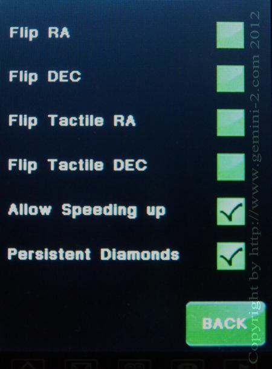

|
Gemini-2 and Gemini-1 Telescope Mount Controllers Website and Tutorials |
| Interactive Hand-Controller Menus - click on green button to Navigate |
|  |
This menu lets you swap the buttons on the front and on the back of the
hand controller. The buttons on the back are called tactile buttons.
We call the 4 Diamond shaped directional buttons on the front
Directional Diamond buttons, for lack of a better name. The Allow Speeding up enables/disables the "opposite button trick" for speeding up movements using the tactile buttons. (buttons on the back of the Hand Controller.) This opposite button trick is press the opposite button to cause the mount to speed up to the next speed selection range. How the Allow Speeding up works: If you uncheck this box, the buttons work in a very safe manner. Not only that a movement will never speed up to the next stage, pushing both "opposite" button while the other button is still pressed - ignores the first button and changes the direction for guiding and centering speeds. Movement stops if the button pressed as the last one is released - Ramps down a Move or Slew movement. With the "Allow Speeding Up" box checked the HC buttons work like the G1 HC buttons worked: Within the mode selected (Photo mode: Guiding can be accelerated to slewing, Visual Mode: Centering to Slewing, ...) with the "opposite key" trick.. The Speed setting on the main screen defines the starting speed. |
| Persistent Diamonds - there are the 4 directional buttons on the front of the hand controller - No more sticky keys (Persistent Diamonds). If you don't choose this option. You may have to use the "Store Settings" button on the HC menu screen to initialize the variable in the SDRam. In other words uncheck the box if you don't want sticky keys. Please notice that there are small regions around the keys where they are still active, so if you continue to hold down the key while sliding you finger off the key will stay activated until you get out of that area, or lift your finger off the LCD pad. Please be aware that this is a compromise between both button actions being able to be selected. |
| This site is not for profit and sells nothing and asks for no money for any help it provides. This site is here to help fellow Gemini-2 and Gemini-1 owners. This Web Site is not associated with Losmandy-Hollywood General Machining Inc. or any of their employees and never has been. There is no guarantee that all the information is correct, but strives to provide the best information possible. The use of any information is at your own risk. The webmaster is an unpaid beta tester, and tries to work with other beta testers, and René the writer of the firmware. If you would like to help keep this web site going send your gift to gemini-2.net Your gift will be used to defray the cost of keeping this web site up, unless you specify otherwise. |
| I have tried many times to make a PDF of this site with no luck. Every program to do this screws up the links and images. I am not going to write a manual either. I developed this web site for my own use in the beginning, but it soon went public. |
| Your Privacy Policy
No Information is collected by this site. Cookies are set in your browser, but only for visited links to change color. |
| Your use of any information on this site is at your own risk. |
and https://www.gemini-2.com
Gemini-2 and Gemini is a registered trade names of Hollywood General Machining Inc.